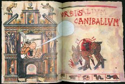
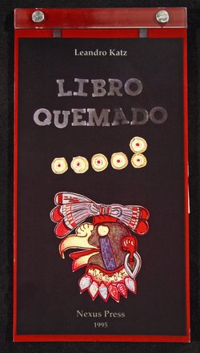
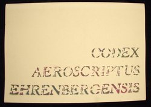
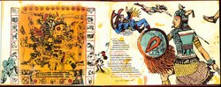

Nahuatl has not disappeared. To the contrary, it is currently spoken by more than 1.5 million Mexicans; and Aztec heritage has become a vital component of Mexican and Mexican-American identity, influencing the work of many contemporary writers, artists, and scholars. The inherent flexibility of traditional indigenous creativity facilitates combination with contemporary artistic practices. Traditional screenfold books are layered with contemporary collage and print techniques, and indigenous images are juxtaposed with colonial scenes and pop icons.
Contemporary Mexican and Mexican-American artists use traditional Aztec images and techniques to explore both contemporary life and Mexican cultural heritage. The screenfold format is an emblem of ancient Mesoamerican culture, and has become charged with historical and political meaning. Contemporary artists combine this format with humorous and provocative imagery to explore the cultural and political dynamics of preconquest identity, the colonization of Mexico and current relations between Mexico, Europe, and the United States.
Loan courtesy of Ellen T. Baird
|  |
Queen Isabella of Spain decreed that conquistadors could not enslave any Native American tribes they encountered unless they practiced cannibalism, hence incidences of indigenous cannibalism may have been wildly exaggerated. Chagoya alludes to such exaggerations by juxtaposing a speared deer from the indigenous Codex Borgia with European references to Aztec cannibalism. The French cartoon character Asterix speaks from within a colonial façade decorated with European renderings of Aztecs feasting on human limbs. As his eyes are shut tight, Asterix is blind to the subject of his commentary.
|  |
Created in response to the 500th anniversary of Columbus' first voyage, the bilingual Libro Quemado uses poetic language to envision the destruction of hundreds of Mayan books at Maní, Yucatan in 1652, under the orders of Spanish Friar Diego de Landa. As Landa related in his Account of the Affairs of the Yucatan, “...because (the books) contain nothing but superstition and the Devil's falsehoods, we burned them all.” Despite similar actions by the Spanish across colonial Mexico, indigenous bookmaking traditions continued during colonialism and a number of prehispanic books have survived to influence contemporary artists.
Newberry Library: Ayer PM4068.H47, (2-3, 4)
Much contemporary Nahuatl writing is dedicated to the analysis and preservation of Mexican history and cultural identity, and to the continuity of the Nahua literary tradition. The Nahuatl word for poet, xochitlajtouani, refers to the poet's propensity for “flowery speech,” as well as to the traditional emphasis on orality and performance. The selection on display here reveals that the life of a Nahua poet is both a creative and a spiritual journey.
Loan courtesy of Ellen T. Baird
The Otomí and Nahua tradition of intricate symmetric paper cutouts of deities has been integrated into handmade amatl screenfold books. The paper for the pages and cutouts used for the Historia de una vivienda is made from the inner bark of the ficus tree and comes from the primary amatl producing village, San Pablito, Pahuatlan (Puebla). The cutouts include depictions of deities, such as the “goddess of the temascal (steambath),” and are paired with texts which suggest customary offerings to them. Such books demonstrate the continuity of traditional practices in the everyday life of contemporary indigenous Mexican peoples.
Gift of Ellen T. Baird
Newberry Library
|  |
Using a group of hand-cut stencils he created over a period of twenty years, Mexican Fluxus artist Felipe Ehrenberg constructed a screenfold codex of imagery from contemporary Mexican life. The formal qualities of the stencils are similiar to visual elements used in nahua codices—they can be broken down and recombined to render complex meanings. Ehrenberg designed the book to be read in a variety of ways, including as a detective novel and as a musical score.
Loan courtesy of Ellen T. Baird
|  |
Composed of a series of Chagoya’s prints, textualized versions of performances by Gómez-Peña, and Rice’s typography, the screenfold Codex Espangliensis collages imagery borrowed from indigenous manuscripts, colonial sources, and contemporary Mexican and American popular culture. The theme of cultural encounters is depicted through an Aztec warrior's confrontation with Superman and Wonder Woman as well as Minnie Mouse's reaction to a portion of the indigenous Codex Borgia.
Loan courtesy of Ellen T. Baird
Solidly grounded in indigenous and early Latin American art, The Adventures of the Modernist Cannibals also blends a collection of visual references to contemporary American and French culture. In his depiction of the encounter of French, Mexican, Aztec, and Maya cultures, Chagoya proposes a type of "reverse anthropology," suggesting what might have occurred had Europe been colonized by indigenous Americans. Here, Adelita, a reference to women who took up arms during the Mexican revolution, is pitted against a French soldier and Superman.